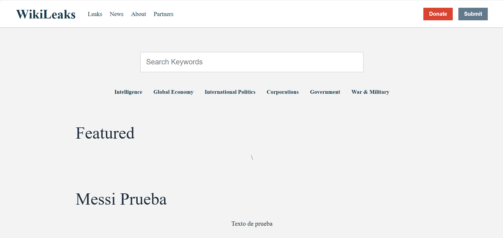

Hongo dice "Fraude"!!
Se habla de una supuesta robada nen la actividad del profe, debido a que nuestro equipo ya habiamos creado la pagina, pero debido al cache del navegador no se nos actualizo y no conto para ganar puntos. Fraude!
10 de abril 2026
Se habla de una supuesta robada nen la actividad del profe, debido a que nuestro equipo ya habiamos creado la pagina, pero debido al cache del navegador no se nos actualizo y no conto para ganar puntos. Fraude!

Tras finalizar la actividad resultaron 3 equipos en segundos lugar. Todo debido a un supuesto complot para que mas equipos tengan premios dejando unicamente a un equipo sin beneficio.

A pesar de la actitud negativista del mercado debido a la gran bajada de bitcoin y de que muchos pensabamos que iba a seguir bajando para encontrar minimos del ciclo pasado, el bitcoin rompre estructura en grafico de 4hrs subiendo hasta los 73 mil dolares, seguira subiendo? o solo es una trampa alcista?

En la primera fase unicamente se agregaron cosas visuales, utilice chatgpt para ayudarme a entender mas las cosas que hace que una pagina se vea buena y profecional. Cabe recalcar que cada linea de codigo se escribio a mano copiando a chat pero viendo lo que realizaba en el priview de esta fomra veo como cada cosa del css modifica las cosas del html

Simplemente se agregaron las secciones de noticias sin odenar y con imagenes sin adaptar el tamaño, obviamente todas las noticias las escribi yo con cosas que se me ocurrieron en el momento
Se ordenaron las noticias y se agregaron las secciones de fases, se recalca que estas las hice yo (obviamente no hay un maldito acento por que no acentuar y seguro hay como 100 faltas de ortografia) pero tambien el css respectivo, sin ayuda de chat solo basadnome en las cosas que se usaron antes. (igual seguro se noto la ortografia en las noticias xd)